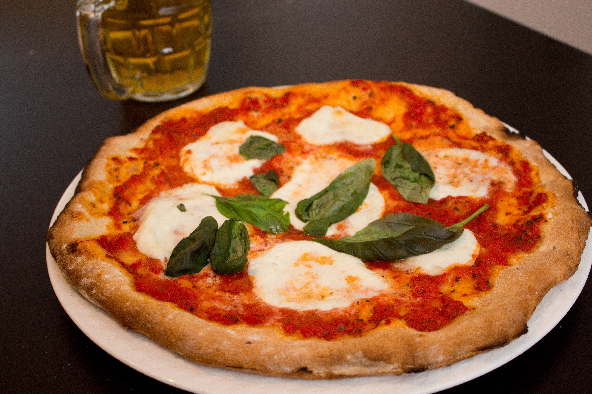

Authentic Pizza Margherita

Description
Inspired by the pizza at Bar Del Corso, this Pizza Margherita features tomato sauce, mozzarella, and basil, with just a hint of sea salt.
Ingredients
- flour
- salt
- water
- yeast
- sugar
- additional flour for dusting
- pizza sauce
- mozz cheese fresh
- basil
- olive oil
- sea salt
Steps
- Stir flour and 1 teaspoon salt in a bowl. Set aside.
- 2
- 3
- 4
- 5
- 6
- 7